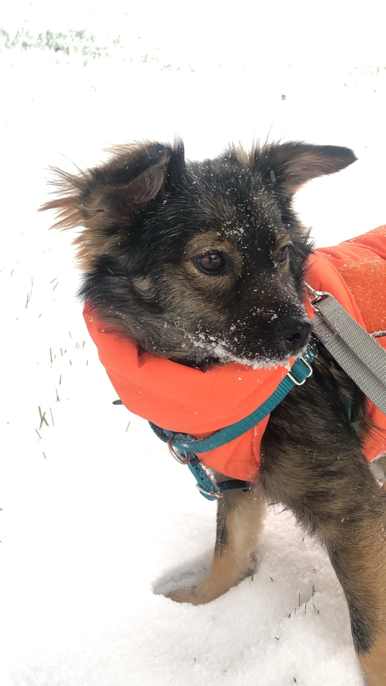

1
Apply
Submit an application (home photos required). The more detail, the better the match.
For the love of rescue
A fully volunteer-run, 100% foster-based dog rescue in New York City. Every dog in our care lives in a loving foster home until they find their forever family.
Simple & thoughtful
We don't issue blanket approvals — every application is matched to the dog. Here's the journey from hello to homecoming.
Submit an application (home photos required). The more detail, the better the match.
If approved, we connect you with the dog's foster to schedule a meet within two weeks.
You'll have 24 hours after meeting to confirm. Then we send the adoption contract.
Sign the agreement, pay the fee (fully-vetted, microchipped, fixed), and coordinate pickup.
Meet the pack
Each of these sweethearts is living in a foster home right now, waiting for their forever family.

For the Love of Rescue
True North Rescue Mission is a New York City-based, fully volunteer-run dog rescue. Our mission is simple: to save dogs in need by bringing them to New York where they can be placed into loving homes.
We partner with rescues in Texas, North Carolina, and Puerto Rico — and we're proud to be the only East Coast partner for Slaughterhouse Survivors in Harbin, China, rescuing dogs from the meat trade.
Read our storyFostering is the heart of what we do
Because we have no physical shelter, every dog we save depends on a foster family. Whether for a weekend or until adoption, you make the next rescue possible.
Ways to give
We're funded entirely by donations and adoption fees. Every contribution goes straight to vetting, transport, and care.
Give a dog a safe place to land while they wait for adoption.
Follow along
Rescue stories, happy tails, and the latest from our community.